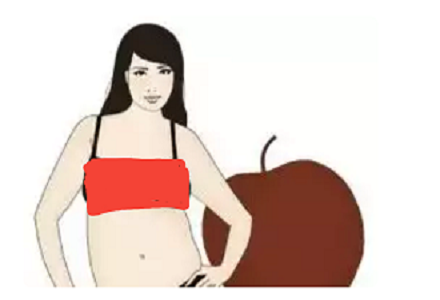

Elma: Vücudunuz elma þeklinde ise, tüm vücut þekilleri arasýnda en yuvarlak hatlara sahipsiniz demektir. Sizin en seksi bölgeniz ince ve düzgün bacaklarýnýz olabilir. Ayrýca
tamamen doðal göðüslere sahip olmanýz da muhtemeldir. Bu yapýdaki insanlar çoðunlukla biraz toplu kollara sahip olsalar da bilekleri genelde incedir. Genellikle karýn
bölgesinden kilo alýrlar ve belleri fazla ince deðildir. Üzerinize yapýþan kýyafetlerden kesinlikle uzak durmanýz gerekir. V yaka, ince, dikey çizgili kýyafetler, belde biten ceket
ve montlar, A kesim etekler tercih edin. Geniþ kemerler yerine belinizi saracak ince kemerler kullanarak daha dar bir bel görüntüsü verebilirsiniz. Bu vücut tipi için Drew
Barrymore ve Eva Longoria’yý en belirgin örnekler olarak gösterebiliriz.
|